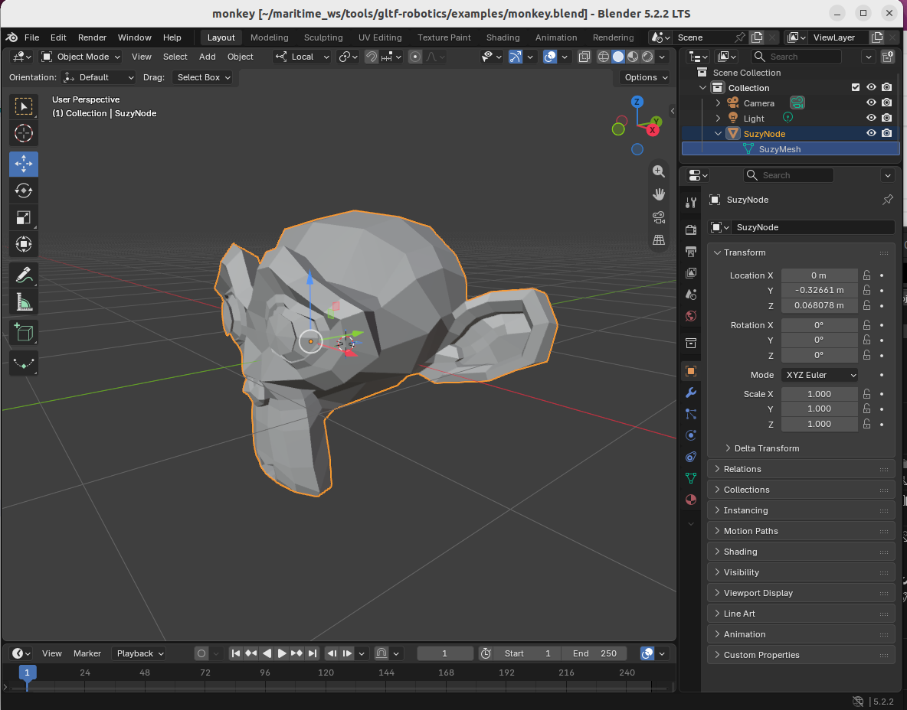
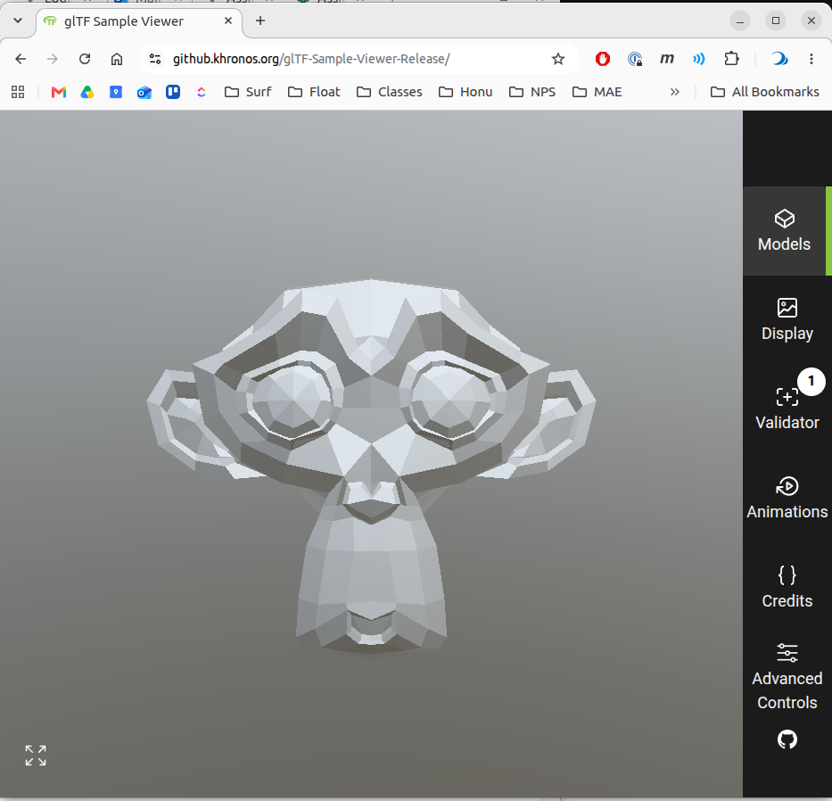
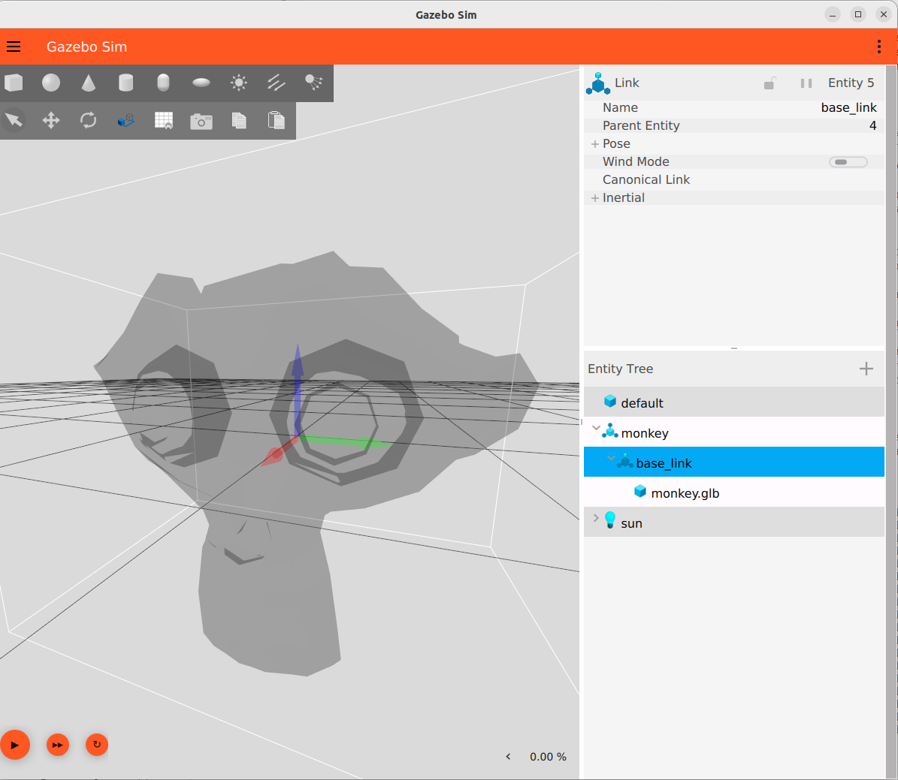
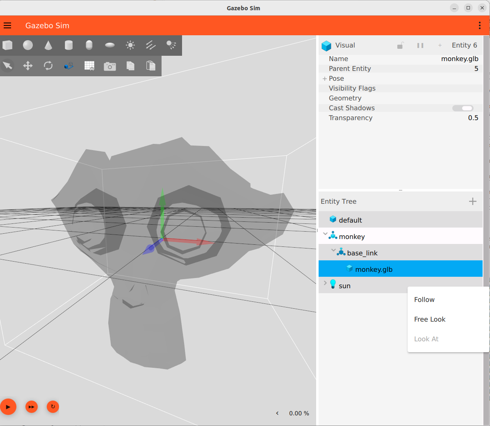
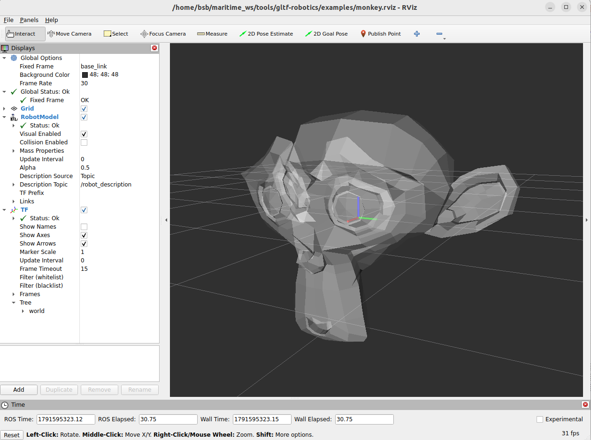
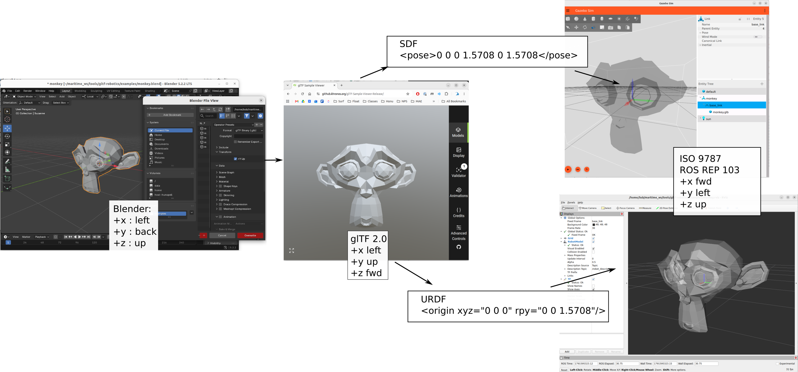

Coordinate system orientation demonstration
This is meant as the simplest possible workflow to demonstrate the workflow and test various assumptions and conventions and to verify the utilities and claims. Maintaining consistency across 3D authoring (Blender), glTF (glTF previewer), Gazebo and RVIZ requires carefully specifying the convention used at each step and what transforms are done (and how) in each translation step. This is meant as to demonstrate and reinforce the coordinate system conventions in the profile and workflow in a minimal way. The intent is to provide clarity and brevity to that participants at each stage in the process know what to expect and what to produce.
There are two aspects of specifying coordinate systems relative to asset geometry:
Datum location: the origin of the coordinate system of the mesh coordinates. This is covered in the profile’s Datum specification
The orientation of the mesh coordinate system relative to the semantic directions of
front/back,left/rightandup/down. The orientation convention and transformation.
The overarching structure
The key design conventions chosen for the profile and workflow in a minimal way so it is clear to all participants at each stage in the process what to expect for coordinate system orientation.
For each stage in the workflow, we use the standards and/or convention of that tool and/or typical application.
Convention |
+x |
+y |
+z |
|---|---|---|---|
Blender |
left |
back |
up |
glTF 2.0 |
left |
up |
forward |
ISO 9787 / ROS REP 103 |
forward |
left |
up |
Directions are the asset’s own: its left, its back, its up. The normative statement is the profile’s Axes section.
flowchart LR
B["Blender<br/>convention: Blender, +x left, +y back, +z up<br/>you: model with the front toward −Y"]
E["glTF exporter<br/>rotates Blender axes onto glTF axes<br/>you: leave +Y Up on"]
F[".glb file<br/>convention: glTF, +y up, +z forward"]
V["glTF Sample Viewer<br/>no transform<br/>you: check it stands upright and faces the camera"]
G["Gazebo, gz-common AssimpLoader<br/>no transform<br/>you: pose 0 0 0 1.5708 0 1.5708 on the visual"]
R["RViz, Lyrical and later, rviz_rendering AssimpLoader<br/>rolls +90° about X on load<br/>you: rpy 0 0 1.5708 on the URDF visual"]
B --> E --> F
F --> V
F --> G
F --> R
Blender - design 3D geometry using Blender convention
Blender export - check +Y Up, does rotation from Blender coordinates to glTF
glTF viewer - imports with no transform, viewer is now showing glTF convention
Assimp loader - shared by Gazebo and RViz, applies no transform itself
Assimp to Gazebo - uses ISO/ROS REP convention, imports with no transform, we add the additional SDF rotation to go from glTF convention to ISO/ROS REP
Assimp to RViz - RViz uses ISO/ROS REP. RViz does an automatic transform, so we must (as policy) apply a different rotation to convert from glTF to ISO/ROS REP and account for the RViz automatic (silent) transform
Minimum monkey mesh
Create in Blender
Add->Mesh->Monkey
When first created the mesh has no transforms. Global and local coordinate systems share the same origin location and orientation
+x: left
+y: back
+z: up

Export Blender -> glTF
Export to glTF 2.0: We DO select the +Y Up option for export
There are 110 options in the export widget - many places to cause problems.
See the export options reference for with the thirteen parameters that need to be verified/set.
The product of the export with +Y Up option selected is examples/monkey.glb
View in gltF Sample Viewer
To view the exported .glb file, the gltF Sample Viewer is released by the glTF maintainers. The tool does not overtly show coordinate system axes, but the default is with front facing forward.
If we open the export with +Y Up option selected is examples/monkey.glb we see

glTF to Gazebo
Both Gazebo and RVIZ use the same AssimpLoader
By convension we apply two rotations to transform from the .glb file in glTF coordinate convention to the mesh geometry in ISO/ROS-REP convention.
<model name="monkey"><static>true</static><pose>0 0 0 0 0 0</pose>
<link name="base_link"><visual name="monkey.glb">
<pose>0 0 0 1.5708 0 1.5708</pose>
<geometry><mesh><uri>file:///PATH/gltf-robotics/examples/monkey.glb</uri></mesh></geometry></visual>
</link>
</model>
The actual SDF we use is at examples/monkey.sdf, but it contains absolute path and is included for reference only. Which we run (in the drydock container, gz sim 10.5.0 ) with
gz sim -v2 ~/maritime_ws/tools/gltf-robotics/examples/monkey.sdf
In Gazebo, we can visualize the base_link coordinate system (“frames” in Gazebo) to verify that they are indeed consistent with the ISO/ROS-REP convention.

We can also see that the glTF coordiante system is still intact, attached to the mesh, and consistent with glTF convention.

glTF to RVIZ
By convention we apply a rotation about the z axis to transform from glTF to ISO/ROS-REP conventions.
<link name="base_link">
<visual>
<origin xyz="0 0 0" rpy="0 0 1.5708"/>
<geometry>
<mesh filename="file:///home/bsb/maritime_ws/tools/gltf-robotics/examples/monkey.glb"/>
</geometry>
</visual>
</link>
The actual source we use is at examples/monkey.urdf, but again uses absolute paths to avoid any install, so is provided for reference only.
The commands, for reference only, are, in a drydock container:
source /opt/ros/lyrical/setup.bash
ros2 run robot_state_publisher robot_state_publisher --ros-args \
-p robot_description:="$(cat ~/maritime_ws/tools/gltf-robotics/examples/monkey.urdf)"
source /opt/ros/lyrical/setup.bash
rviz2 -d ~/maritime_ws/tools/gltf-robotics/examples/monkey.rviz
The result is

And shows that the geometry is imported and now complies wit the ISO/ROS-REP convention
Summary
This image illustrates the flow from Blender to the Gazebo and RVIZ consumers and highlights the required transforms at each step, necessary to keep the conventions of each tool consistent.
